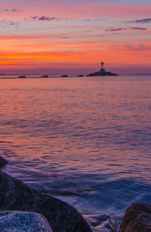

Sopot
Sopot is Poland’s biggest and perhaps most extravagant beach resort with a population of approximately 40,000. It’s sandwiched between two other cities – Gdańsk and Gdynia – which together form Tri-City (Trójmiasto in Polish). Renowned for its wooden pier ( the longest in Europe)which provides amazing views over sandy beaches and the Baltic Sea, it features trendy bars, restaurants, clubs and high-end hotels frequented by affluent Poles, mixed with typical seaside attractions such as waffle shops and souvenir stands. Other highlights include the surrealist Crooked House on Sopot’s main street Monciak, which was inspired by the drawings of Polish book illustrator Jan Marcin Szancer and the annual Open’er music festival, which takes place every July in the nearby Gdynia-Kosakowo airport.

Gdynia
Sopot is Poland’s biggest and perhaps most extravagant beach resort with a population of approximately 40,000. It’s sandwiched between two other cities – Gdańsk and Gdynia – which together form Tri-City (Trójmiasto in Polish). Renowned for its wooden pier ( the longest in Europe)which provides amazing views over sandy beaches and the Baltic Sea, it features trendy bars, restaurants, clubs and high-end hotels frequented by affluent Poles, mixed with typical seaside attractions such as waffle shops and souvenir stands. Other highlights include the surrealist Crooked House on Sopot’s main street Monciak, which was inspired by the drawings of Polish book illustrator Jan Marcin Szancer and the annual Open’er music festival, which takes place every July in the nearby Gdynia-Kosakowo airport.
Gdańsk
Sopot is Poland’s biggest and perhaps most extravagant beach resort with a population of approximately 40,000. It’s sandwiched between two other cities – Gdańsk and Gdynia – which together form Tri-City (Trójmiasto in Polish). Renowned for its wooden pier ( the longest in Europe)which provides amazing views over sandy beaches and the Baltic Sea, it features trendy bars, restaurants, clubs and high-end hotels frequented by affluent Poles, mixed with typical seaside attractions such as waffle shops and souvenir stands. Other highlights include the surrealist Crooked House on Sopot’s main street Monciak, which was inspired by the drawings of Polish book illustrator Jan Marcin Szancer and the annual Open’er music festival, which takes place every July in the nearby Gdynia-Kosakowo airport.